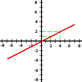
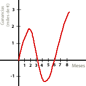

Ejercicios interactivos de representación gráfica de una función
Completa las siguientes tablas según indique cada uno de los enunciados:
1El alquiler de un coche cuesta 25 €/día. Completa la tabla que relaciona el número de días de alquiler con el precio.
| Nº de días | 1 | 2 | 3 | 10 | ||
| Precio (en €) |
25 | 100 | 150 |
| Nº de días | 1 | 2 | 3 | 4 | 6 | 10 |
| Precio (en €) |
25 | 50 | 75 | 100 | 150 | 250 |
2Relaciona la altura de Pedro con su edad usando los siguientes datos:
 Al año de edad medía medio metro.
Al año de edad medía medio metro.
 A los dos años medía 13 cm más.
A los dos años medía 13 cm más.
 A los tres años medía 76 cm.
A los tres años medía 76 cm.
 A los cuatro, 87 cm.
A los cuatro, 87 cm.
 A los cinco le faltaban dos centímetros para llegar al metro de altura.
A los cinco le faltaban dos centímetros para llegar al metro de altura.
 A los seis, pasaba 5 cm del metro.
A los seis, pasaba 5 cm del metro.
 Y a los siete, medía 1m y 10 cm.
Y a los siete, medía 1m y 10 cm.
| Edad (en años) |
1 | 2 | 3 | 4 | 5 | 6 | 7 |
| Altura (en m) |
| Edad (en años) |
1 | 2 | 3 | 4 | 5 | 6 | 7 |
| Altura (en m) |
0.50 | 0.63 | 0.76 | 0.87 | 0.98 | 1.05 | 1.10 |
3Completa la tabla que relaciona un número con su opuesto.
| Número | -3 | -2 | -1 | 1 | 2 | 3 |
|---|---|---|---|---|---|---|
| Opuesto |
| Número | -3 | -2 | -1 | 1 | 2 | 3 |
|---|---|---|---|---|---|---|
| Opuesto | 3 | 2 | 1 | −1 | −2 | −3 |
4Completa la tabla que relaciona el lado de un cuadrado con su perímetro.
| Lado (en cm) |
1 | 2 | 3 | 10 | ||
| Perímetro (en cm) |
4 | 20 | 80 |
| Lado (en cm) |
1 | 2 | 3 | 5 | 10 | 20 |
| Perímetro (en cm) |
4 | 8 | 12 | 20 | 40 | 80 |
5Completa la tabla que relaciona el lado de un cuadrado con su área.
| Lado (en cm) |
1 | 2 | 3 | 9 | 11 | ||
| Área (en cm2) |
1 | 36 | 64 |
| Lado (en cm) |
1 | 2 | 3 | 6 | 8 | 9 | 11 |
| Área (en cm2) |
1 | 4 | 9 | 36 | 64 | 81 | 121 |
Arrastra cada gráfica a la tabla que corresponda
6
| Nº de días | 1 | 2 | 3 | 6 | 8 | 10 |
| Precio (en €) |
10 | 20 | 30 | 60 | 80 | 100 |
| Número | -3 | -2 | -1 | 1 | 2 | 3 |
|---|---|---|---|---|---|---|
| Opuesto | 3 | 2 | 1 | −1 | −2 | −3 |
| Lado (en cm) |
1 | 2 | 3 | 5 | 10 | 20 |
| Perímetro (en cm) |
4 | 8 | 12 | 20 | 40 | 80 |
| Lado (en cm) |
1 | 2 | 3 | 6 | 8 | 9 | 11 |
| Área (en cm2) |
1 | 4 | 9 | 36 | 64 | 81 | 121 |
|
|
||||||||||||||||||||||||||||||
|
|
||||||||||||||||||||||||||||||
Escoge el enunciado adecuado para cada una de estas dos gráficas:
7
8
Escoge la gráfica adecuada para cada enunciado:
9Ana salió a pasear a las 4 de la tarde. A los 15 minutos se encontró con Pablo y estuvieron hablando parados media hora. El chico decidió acompañarla y caminaron durante tres cuartos de hora hasta llegar a casa de Marta. Allí pararon 35 minutos para merendar y descansar. Después volvieron a casa de la chica sin hacer ninguna parada, para lo que emplearon 55 minutos.
 En primer lugar, sumando el tiempo que Ana está en la calle podemos deducir que llega a casa a las 7 de la tarde, lo que nos hace descartar la segunda opción. En efecto:
En primer lugar, sumando el tiempo que Ana está en la calle podemos deducir que llega a casa a las 7 de la tarde, lo que nos hace descartar la segunda opción. En efecto:
 15 + 30 + 45 + 35 + 55 = 180 min = 3 h
15 + 30 + 45 + 35 + 55 = 180 min = 3 h Ana pasa 3 horas fuera de casa.
Ana pasa 3 horas fuera de casa.
 Como salió de casa a las 4 de la tarde, entonces llega a casa a las 7 de la tarde, es decir, a las 19:00 horas.
Como salió de casa a las 4 de la tarde, entonces llega a casa a las 7 de la tarde, es decir, a las 19:00 horas.
 Ana hace dos paradas, una al encontrarse con Pablo y otra para merendar en casa de Marta, por tanto, esto debe aparecer como dos tramos de función constante en la gráfica, ya que en esos intervalos de tiempo no se recorre espacio alguno, no aumentando así ni disminuyendo la distancia a casa de Ana. Por tanto, también podemos descartar la primera gráfica, puesto que en ella sólo hay un tramo de función constante.
Ana hace dos paradas, una al encontrarse con Pablo y otra para merendar en casa de Marta, por tanto, esto debe aparecer como dos tramos de función constante en la gráfica, ya que en esos intervalos de tiempo no se recorre espacio alguno, no aumentando así ni disminuyendo la distancia a casa de Ana. Por tanto, también podemos descartar la primera gráfica, puesto que en ella sólo hay un tramo de función constante.
 Por tanto, la gráfica correcta es la última:
Por tanto, la gráfica correcta es la última:
10Queremos llenar un recipiente como el de la figura dejando abierto un grifo que deja caer el agua a velocidad constante. Pretendemos encontrar la tabla que relaciona el tiempo transcurrido con la velocidad de llenado del recipiente.
Debemos observar que al principio la velocidad de llenado será mayor, puesto que la zona inferior del recipiente (que va a ser la que se llena primero) es más estrecha que la superior. Por tanto, la gráfica correcta debe indicar una mayor velocidad al principio y menor más adelante, es decir, algo como lo que se muestra en la siguiente gráfica
Si tienes dudas puedes consultar la teoría